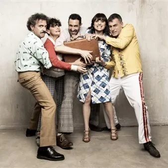

mer 11 nov · dalle 20:45
Win for Life
Spettacolo Musical facente parte della Stagione di prosa, musica e danza 2026-2027 del Teatro Adelaide Ristori di Cividale del Friuli
 Indicazioni
Indicazioni
- Costi e prenotazioni
- Costo non indicato · Prenotazione non indicata
- Programma
- Programma da verificare. Apri la fonte ufficiale per orari e possibili aggiornamenti.
- In caso di maltempo
- Nessuna indicazione specifica pubblicata.
- Note
- Acquisito automaticamente dalla fonte.
L’EVENTO
Descrizione completa
Suona il campanello. Apri la porta. Uno sconosciuto ti offre ottomila euro al giorno, per sempre.
Una proposta apparentemente irresistibile che nasconde una sola domanda: cosa sei disposto a fare, o a perdere, per accettarla?
Da questo spunto prende avvio Win for Life , il nuovo musical originale degli Oblivion, una commedia musicale costruita attorno a una storia ricca di equivoci, colpi di scena e personaggi surreali.
La protagonista è Mila, collaboratrice domestica originaria dell’Europa dell’Est, che da un giorno all’altro diventa ricchissima. C’è però una condizione: non può rivelare a nessuno la propria fortuna, pena la restituzione dell’intera somma accumulata. Conservare il segreto si rivelerà ben più complicato del previsto.
Attorno a lei si muove una galleria di personaggi irresistibili: un marito scansafatiche con progetti improbabili, una figlia più interessata al conto corrente che allo yoga, un anziano sanguigno dal vocabolario essenziale, un narcotrafficante usuraio, misteriosi uomini mascherati e persino tre mariachi incaricati di interrompere continuamente il racconto.
Con il loro inconfondibile stile, che unisce comicità, virtuosismo musicale e gusto per la parodia, gli Oblivion firmano una storia originale fatta di inganni, intrighi internazionali e situazioni paradossali, trasformata in un musical dal ritmo travolgente.
Ottanta minuti di canzoni, risate e colpi di scena che giocano con il tema della fortuna e con l’eterna domanda: se la fortuna bussasse davvero alla tua porta, sapresti dire di no?
BIGLIETTI: Platea interi € 25,00
Platea ridotti € 22,00
Platea under 25 € 17,00 Galleria interi € 22,00
Galleria ridotti € 20,00
Galleria under 25 € 15,00 Riduzioni: over 65, under 25 anni, abbonati a una Stagione ERT. PREVENDITA : Online da lunedì 19 ottobre su ertfvg.it.
in teatro, il giorno prima dello spettacolo dalle 17 alle 19 e la sera dello spettacolo dalle 20.
Per maggiori informazioni:
Teatro
tel: 3884969684 (orario: 9.00/18.00) teatroristori@cividale.net (il giorno dello spettacolo) Biglietteria ERT
tel: 0432224246
Acquista il biglietto online: qui
IL PROGRAMMA
Programma e orari
Appuntamenti raccolti dalle fonti elencate. Dove manca un orario, non è ancora disponibile in questa scheda.
Programma pubblicato
- Dal 2026-11-11 al 2026-11-11
INFORMAZIONI UTILI
Prima di partire
- Controllare la fonte prima di partire.
ORGANIZZAZIONE